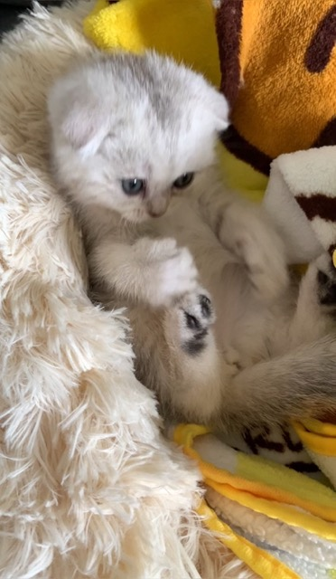
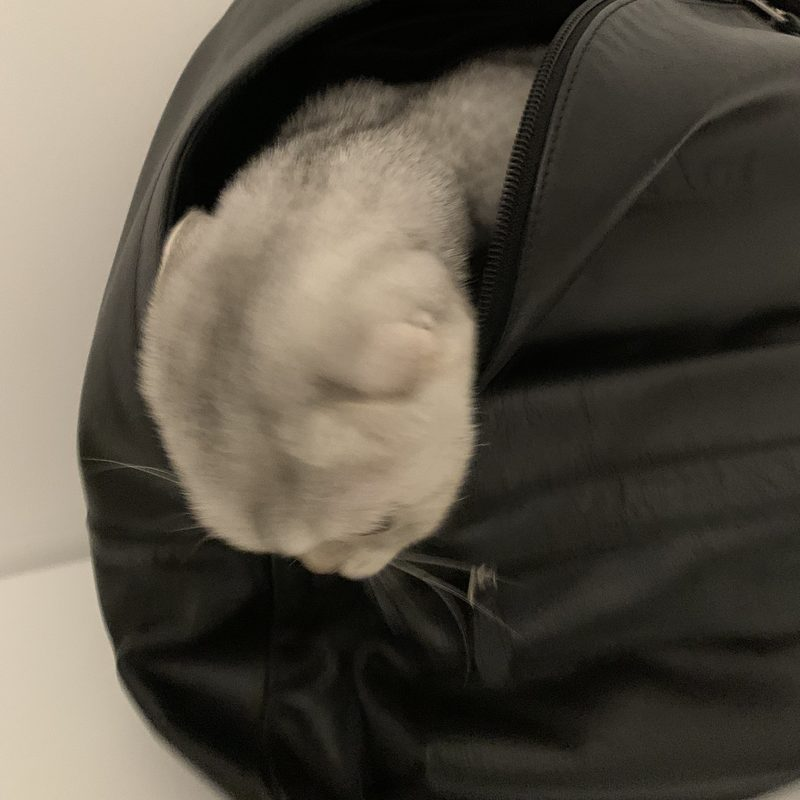
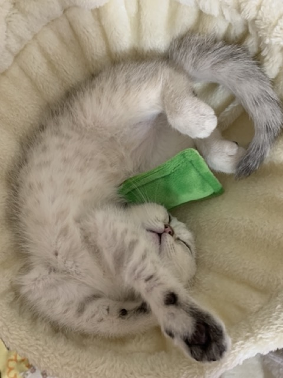

About
I am a Master's student in Business Analytics (Data Analytics concentration) at Baruch College, graduating in May 2027. In Spring 2027 I will also start the Online Master of Science in Computer Science at Georgia Tech.
Before moving into data, I studied Digital Design at City College of New York and worked for seven years as a Broadcasting Technician at Sinovision. I started building websites during my design work, and that led me to coding and data analytics.
I am looking for Summer 2027 data analyst and business analyst roles in New York.
Projects
NYC Property Market Dashboard →
A full-stack dashboard analyzing 498K NYC property transactions from 2013 to 2025. Built end to end in Python, with KD-Tree spatial joins and the master dataset compressed from 109MB to about 10MB for deployment.
NYC Condominium Valuation
Predicted NYC condo values using linear regression and random forest models.
Walmart Retail Sales Analysis
Compared three regression models for weekly sales using AIC and confidence intervals.
BrightSmile Dental Database
A clinic database for managing patient and staff records.
NYC Construction Permits vs. 311 Complaints
A data warehouse linking 271K DOB building permits with 252K construction and plumbing 311 complaints (2020 to 2026), to see which boroughs and permit types draw the most complaints and where unpermitted work may be happening.
Experience
Broadcasting Technician
- Built and ran daily broadcast playlists in Crispin automation software, scheduling programs, commercials, and station IDs to the frame across multiple channels.
- Ran live event broadcasts on LiveStream equipment, including Chinese New Year celebrations, keeping on-air timing exact under deadline pressure.
- Maintained broadcast equipment and systems, troubleshooting signal and playout issues during live operations.
- Monitored on-air signals and escalated problems to the IT team and WNBC.
Education
M.S. in Computer Science (Online)
M.S. in Business Analytics, Data Analytics Concentration
B.A. in Art, Digital Design and Illustration concentration
Resume
The full resume as a PDF. For anything else, feel free to email me.
Beyond Data
Nono is a distinguished lady, born on April 13, 2023. She joined our family when she was just two months old. Today she is a healthy, wealthy lady who eats chicken breast, lickable cat treats, and unlimited dry and wet food every day.



Side Projects: Website designs, illustrations, and videos from before and outside of data.